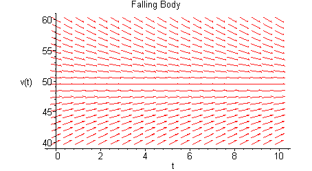
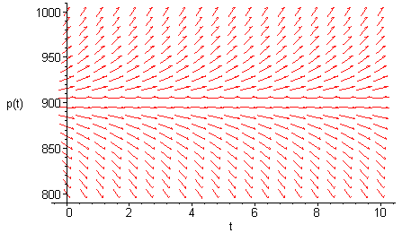

(Using the following command and hitting enter:)
> with(DEtools):
> dfieldplot(diff(v(t),t)=9.8-v(t)/5, v(t), t=0..10,v(t)=40..60, title=`Falling Body`);

When dealing with Maple, or any other software for that matter, remember that it is a machine you are dealing with and it will only do what it is programmed to do. So try to put in the commands in the precise fashion it requires. Using Maple gives you the added advantage of taking one of its examples and tweaking it to suit your purposes. Here is the example about the field mice that we talked in the class about. If you already have with(DEtools): on your screen then you do not have to repeat it. So punch in the differential equation related to the field mice (page 6 of your book).
> dfieldplot(diff(p(t),t)=0.5*p(t)-450,p(t),t=0..10,p(t)=800..1000);

>